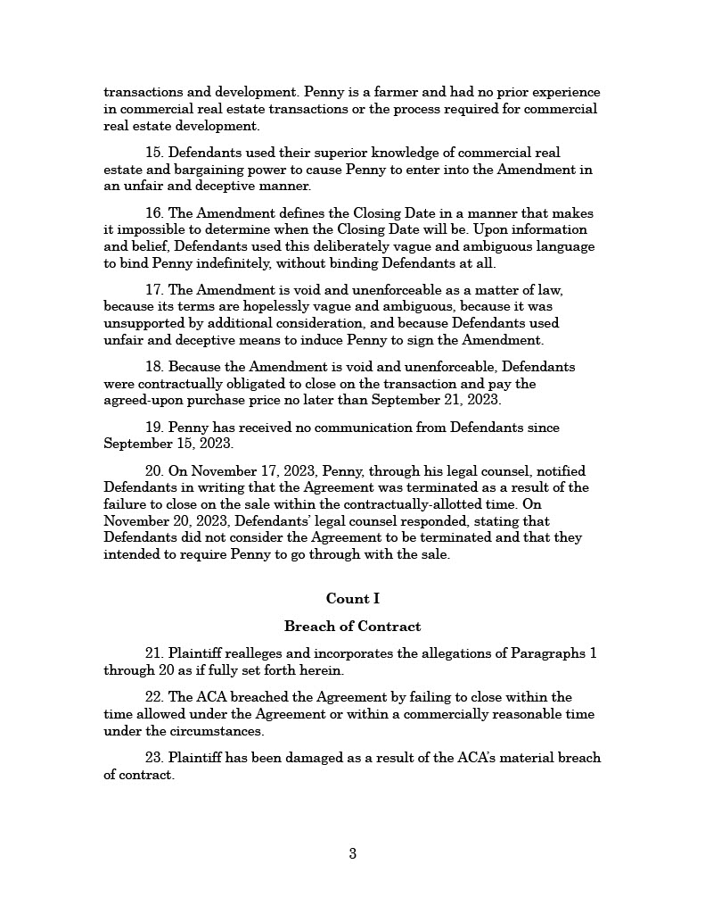

Practice Exam Question 9: Essay (Pleading) & Multiple Choice
Questions
The American Cricket Association (“ACA”) is a professional sports league established two years ago. Walter Wicket, a venture capitalist and cricket fanatic, founded the ACA and is the President and CEO.
The ACA will hold its inaugural season in the summer of 2024, with eight teams scheduled to compete. To ensure that every team has a home field suitable for professional-level cricket, the ACA is developing new cricket grounds in each city. The ACA will own those facilities and lease them to the teams.
The Gate City Googlies, based in Greensboro, North Carolina, are one of the teams in the ACA. In November 2022, the ACA entered into a contract with George Penny to buy Penny’s 70 acre farm in Greensboro as a site for the Googlies cricket ground. Last week, Penny filed a suit against the ACA and Wicket in the U.S. District Court for the Middle District of North Carolina. The complaint (see below) alleges that the ACA breached the contract by failing to close on the sale, and seeks to hold Wicket personally liable for the alleged breach.

In response to the complaint, Wicket files a motion under FRCP Rule 12(b)(6) to dismiss the claim seeking to hold him personally liable for the alleged breach of contract.
Ordinarily, corporate shareholders are not personally liable for a breach of contract by the corporation. However, where “the corporation is so operated that it is a mere instrumentality or alter ego of the sole or dominant shareholder and a shield for his activities in violation of law”, the equitable remedy of “piercing the corporate veil” allows a plaintiff to hold the shareholder personally liable for the corporation’s breach. “Veil piercing” requires more than just majority or complete ownership of the corporation’s stock. The plaintiff must show that the shareholder “exercises complete domination, not only of finances, but of policy and business practice in respect to the transaction attacked so that the corporate entity as to this transaction had at the time no separate mind, will or existence of its own.” Relevant factors include:
- Disregard of corporate formalities, such as failing to file annual reports with the state, failing to keep corporate records, or making corporate decisions without involvement or approval by the board of directors;
- Intentional undercapitalization (providing the corporation with inadequate assets) or siphoning (transferring assets out of the corporation) that leaves the corporation unable to pay operating expenses, debts, and liabilities;
- Failure to respect the separate personality of the corporation, such as commingling of corporate and personal funds, or personal use of corporate property.
Part A: Essay
Should the court dismiss the “Veil Piercing” claim against Wicket? (Assume that the breach of contract claim against the ACA would withstand a motion to dismiss and do not address that issue. Also assume that the court has personal jurisdiction over each defendant and subject matter jurisdiction over each claim.)
Part B: Multiple Choice
Regardless of your answer in Part A, assume that Wicket does not file a motion to dismiss under Rule 12(b)(6).
- George Penny was born on his family’s farm in Greensboro, North Carolina and has lived there his entire life. Walter Wicket resides in California, where he was born and raised. Wicket also owns a house in Asheville, North Carolina. He spends at least a month there every year and plans to live there permanently after he retires. Wicket founded the ACA two years ago. The ACA is organized as a business corporation under Delaware law, and has its business headquarters in San Jose, California. Wicket owns 60% of the ACA’s corporate stock and is chair of the board of directors. The remaining stock is owned by the eight teams that have joined the ACA for its inaugural season (5% each) and each team has a seat on the board of directors. Does the federal court have subject matter jurisdiction over Penny’s claims?
- Yes, the court has diversity jurisdiction.
- Yes, if the ACA and Wicket assert a defense based on federal law.
- No, because Wicket owns a home in North Carolina.
- No, because the Gate City Googlies are shareholders in the ACA and have a seat on the ACA’s board of directors.
Regardless of your answer to the previous question, for purposes of the remaining questions, assume that the court has subject matter jurisdiction over Penny’s claims against the ACA and Wicket.
- Under state law, a plaintiff suing a corporation may not join a shareholder as a co-defendant to pursue the veil piercing remedy in the same action. Instead, the plaintiff must first sue and obtain a judgment against the corporation. If the plaintiff is unable to collect on the judgment from the corporation, the plaintiff may then bring an action against the shareholder to pursue the veil piercing remedy. Under federal law, FRCP Rule 20(a)(2) allows the plaintiff to join the corporation and shareholder as co-defendants in the same action and the court may then order separate trials or other appropriate measures under Rule 20(b). Under both state and federal law, the veil piercing remedy requires proof that the shareholder exercises complete domination over the corporation’s finances, policy, and business practices so that the corporate entity is merely an instrumentality or alter ego of the shareholder. Under state law, the ordinary standard of proof—preponderance of evidence—applies to the veil piercing remedy. But under federal law, a heightened standard of proof—clear and convincing evidence—applies to the veil piercing remedy. Which of the following is correct?
- Federal law will apply to both the joinder of Wicket as a co-defendant and the standard of proof for the veil piercing remedy.
- Federal law will apply to the joinder of Wicket as a co-defendant and state law will apply to the standard of proof for the veil piercing remedy.
- State law will apply to both the joinder of Wicket as a co-defendant and the standard of proof for the veil piercing remedy.
- State law will apply to the joinder of Wicket as a co-defendant and federal law will apply to the standard of proof for the veil piercing remedy.
- Wicket files an answer, generally denying all allegations in Penny’s complaint. Wicket also asserts a counterclaim against Penny for defamation, alleging that Penny was responsible for an anonymous post to a Facebook group called “Greensboro Property Owners” saying, “If Walter Wicket approaches you about buying your property for a cricket field, DO NOT TRUST HIM!!!! He is a liar and a crook who will use every dishonest trick in the book to cheat you.” Wicket has no direct evidence that Penny was responsible for the post, but believes he was because Wicket hadn’t communicated or dealt with anyone else in Greensboro about acquiring land for the Googlies cricket ground. Is Wicket subject to sanctions under Rule 11?
- Yes, for denying all of Penny’s allegations and for asserting the defamation counterclaim without being certain Penny was responsible for the Facebook post.
- Yes, but only for denying all of Penny’s allegations.
- Yes, but only for asserting the defamation counterclaim without being certain Penny was responsible for the Facebook post.
- No.
- The ACA files an answer denying that it breached the Agreement. In its answer, the ACA asserts that the Amendment was valid and that even under the original terms of the Agreement, it was not required to close on the sale until 30 days after it obtained the requisite government approval and permits. In addition, the ACA asserts a counterclaim against Penny for breach of contract, contending that he terminated the Agreement without cause. Assume that, under state law, the Gate City Googlies would also have standing to assert a breach of contract claim against Penny, because the purpose of the Agreement was to acquire property on which to build a cricket ground for use by the team. May the Googlies join as a co-party with the ACA on its counterclaim and (assuming joinder would be allowed) would the court have subject matter jurisdiction over the claim by the Googlies against Penny?
- The Googlies may join as a co-party with the ACA against Penny, but the court would not have subject matter jurisdiction unless the Googlies could recover more than $75,000 from Penny.
- The Googlies may join as a co-party with the ACA against Penny, and the court would have subject matter jurisdiction regardless of how much the Googlies could recover from Penny.
- The Googlies may join as a co-party with the ACA against Penny, but the court would not have subject matter jurisdiction regardless of how much the Googlies could recover from Penny.
- The Googlies may not join as a co-party with the ACA against Penny, but the court would have subject matter jurisdiction over their claim.
- The ACA also wants to assert two claims against Wicket: (1) a claim that Wicket breached his fiduciary duty to the corporation by negotiating and signing the Agreement without authorization or approval by the board of directors, (2) a claim that Wicket embezzled $25,000 in corporate funds, unrelated to the Agreement with Penny. Which of the following is correct?
- Under the FRCP, joinder of the fiduciary duty claim is compulsory and joinder of the embezzlement claim is permitted.
- Under the FRCP, joinder of the fiduciary duty claim is permitted, and joinder of the embezzlement claim is permitted regardless of whether the ACA also asserts the fiduciary duty claim.
- Under the FRCP, joinder of the fiduciary duty claim is permitted, and joinder of the embezzlement claim is permitted only if the ACA also asserts the fiduciary duty claim.
- Under the FRCP, neither joinder of the fiduciary duty claim nor joinder of the embezzlement claim is permitted.
Regardless of your answer to the previous question, assume that the FRCP would permit joinder of both claims by the ACA against Wicket.
- If the ACA asserts both claims against Wicket, which of the following is correct?
- The court will have subject matter jurisdiction over both claims, provided the amount in controversy between the ACA and Wicket exceeds $75,000.
- The court will have subject matter jurisdiction over both claims, regardless of the amount in controversy between the ACA and Wicket.
- The court will have subject matter jurisdiction over the fiduciary duty claim, but will not have subject matter jurisdiction over the embezzlement claim.
- The court will not have subject matter jurisdiction over either claim.
Regardless of your answer to the previous question, assume that the ACA does not assert any claim against Wicket in Penny’s suit.
- The case proceeds to discovery, at the conclusion of which Wicket moves for summary judgment on the “Veil Piercing” claim. In support of his motion, Wicket offers an affidavit in which he declares that the ACA consistently filed annual reports with the State of California, maintained appropriate business records, and observed all other corporate formalities; that the board of directors reviewed and approved all corporate decisions, including the Agreement with Penny; that the corporation had adequate cash and other assets to pay all anticipated expenses and debts; and that he never commingled the ACA’s corporate funds with his own or made personal use of corporate property. Should the court grant the motion for summary judgment?
- No, because Wicket may not rely solely on his self-serving affidavit and is required to offer additional evidence to refute the claim that he operated the ACA as his mere instrumentality or alter ego.
- No, if the court believes that Penny may be able to produce evidence at trial proving that Wicket operated the ACA as his mere instrumentality or alter ego.
- Yes, if the court determines that Wicket’s affidavit is credible.
- Yes, unless Penny supports his opposition to the motion with evidence showing that Wicket operated the ACA as his mere instrumentality or alter ego.
Regardless of your answer to the previous question, assume that the court grants Wicket’s motion for summary judgment and dismisses the claim against him.
Along with its order granting Wicket’s motion for summary judgment, the court issues a written decision that contains these findings of fact and conclusions of law:
- The ACA board of directors authorized Wicket to negotiate an agreement to buy the Plaintiff’s property. The board of directors also reviewed the Agreement, approved the terms, and authorized Wicket to sign the Agreement on behalf of the corporation.
- In his dealings with Penny, Wicket acted at all times within the scope of his authority as an agent of, and consistent with his fiduciary duties to, the ACA.
The suit proceeded on the remaining claims between Penny and the ACA. After a bench trial, the court entered judgment in favor of Penny on both his claim and the ACA’s counterclaim. The court again issued a written decision that included these findings of fact and conclusions of law:
- The ACA made the 3 payments of $7500 for extending the Examination Period,
- The ACA failed to exercise due diligence in obtaining the required building permits.
- The terms of the Amendment are so vague and ambiguous as to render the Amendment unenforceable and void.
- The ACA failed to close on the sale within a commercially reasonable time.
- By failing to exercise due diligence and failing to close on the sale within a commercially reasonable time, the ACA breached the Agreement.
- When Penny notified the defendants that he was terminating the Agreement, the ACA was already in material breach and the Agreement was no longer enforceable by the ACA against Penny.
The court awarded Penny $1.5 million (the sale price under the Agreement) in damages against the ACA.
- Furious over this debacle, the eight ACA teams bring a shareholder derivative suit against Wicket. In this type of suit, the shareholders sue in a representative capacity on behalf of the corporation, to assert claims against corporate officers or directors for breach of their duty to the corporation. The complaint alleges that Wicket exceeded his authority as an agent of the ACA and breached his fiduciary duty to the corporation, by negotiating and signing the Agreement without authorization or approval by the board of directors, and that the ACA lost Penny’s lawsuit as a result of Wicket’s fiduciary breach. Wicket files an answer denying liability. He then files a motion for summary judgment, asserting (1) that the claim is barred by the judgment in the prior suit, and (2) if the claim is not barred, the plaintiffs are precluded from disputing the court’s findings of fact and conclusions of law in the prior suit. Which of the following is correct?
- Claim preclusion and issue preclusion will both apply against the plaintiffs.
- Neither claim preclusion or issue preclusion will apply against the plaintiffs.
- Claim preclusion will apply against the plaintiffs, but issue preclusion will not.
- Issue preclusion will apply against the plaintiffs, but claim preclusion will not.
- In the aftermath of Penny’s suit, the ACA is unable to acquire an alternate site and build a cricket ground for the Gate City Googlies in time for the 2024 season. The Googlies file a lawsuit against the ACA in North Carolina state court. The complaint alleges that the ACA breached its contractual duty to provide the team with a suitable home field, and that the team had to refund $50,000 in advance ticket sales as a result. The ACA moves to dismiss the suit for lack of personal jurisdiction. Should the court grant the motion?
- Yes, unless the ACA owns some property in North Carolina and the plaintiff has the court attach that property to secure payment of any eventual judgment.
- Yes, because the ACA is not incorporated in North Carolina and does not have its principal place of business there.
- No, because the ACA waived any object to personal jurisdiction in North Carolina by failing to raise that objection in Penny’s suit.
- No, because the ACA established a business relationship with the Googlies and promised to build a cricket ground for the team in North Carolina, for the purpose of hosting league matches there.
Regardless of your answer to the previous question, assume that the ACA does not move to dismiss for lack of personal jurisdiction.
- The Googlies’ complaint against the ACA alleges that “The purchase of a site for the Googlies cricket ground fell through because the ACA and its agent, Walter Wicket, failed to exercise due diligence in obtaining required building permits.” The ACA files an answer, specifically denying that allegation (among others) and contends that “The ACA and Wicket made their best efforts to obtain the requisite building permits and close on the purchase of Penny’s Farm in time to build a cricket ground on that site. The ACA was unable to acquire the site only because Penny terminated the Agreement without cause.” The ACA files a motion to dismiss under FRCP Rule 12(b)(7) for failure to join a party required to be joined if feasible. The ACA contends that Wicket is a party who must be joined if feasible, because the team is seeking to hold the ACA liable based on Wicket’s actions. But the ACA contends that joinder of Wicket is not feasible. Which of the following is correct?
- Wicket is a party who must be joined if feasible, and joinder of Wicket is feasible.
- Wicket is a party who must be joined if feasible, but joinder of Wicket is not feasible.
- Joinder of Wicket is feasible, but Wicket is not a party who must be joined if feasible.
- Joinder of Wicket is not feasible, and Wicket is not a party who must be joined if feasible.
Answers
Essay Model Answer
Under FRCP Rule 8(a)(2), a complaint must contain “a short and plain statement of the claim showing that the [plaintiff] is entitled to relief”. A defendant may challenge the sufficiency of a complaint with a motion to dismiss under Rule 12(b)(6), for “failure to state a claim upon which relief can be granted”.
The Supreme Court has adopted a “plausibility” standard to determine whether a claim satisfies Rule 8(a)(2) and a two-step analysis for a Rule 12(b)(6) motion: (1) assume that all factual allegations in the complaint are true, while disregarding any allegations that merely state a legal conclusion; (2) assess whether the alleged facts, together with any inferences plausibly supported by those facts, are sufficient to establish the defendant’s liability. In making that assessment, a court may draw on common sense and experience, weighing any inferences on which the claim relies against alternative inferences under which the defendant would not be liable.
In Twombly, the Court applied this standard to dismiss an antitrust conspiracy claim against various telecom service providers. The complaint alleged that the defendants charged similar prices and refrained from offering services in geographic regions already served by other providers. The complaint further alleged that the defendants did so pursuant to an agreement to restrain competition. The Court assumed that the factual allegations about the defendants’ behavior were true. But the court treated the allegation that the defendants acted pursuant to an agreement as conclusory, because it merely recited the “agreement” element of an antitrust claim, without providing any facts about the alleged agreement itself. To assess whether the existence of an illegal agreement was a plausible inference from the factual allegations about the defendants’ behavior, the Court considered the alternative inference that the defendants independently (and lawfully) acted in response to market competition. In the Court’s view, that alternative explanation was more plausible and the plaintiffs needed something more than mere “parallel conduct” (which is not, in itself, illegal) to overcome it.
In this case, Penny contends that “Wicket operates the ACA as a mere instrumentality or alter ego of himself, exercising complete dominion and control over the ACA.” As in Twombly, this allegation merely recites an element of the veil piercing claim and is thus not entitled to the presumption of truth. Treating that allegation as a legal conclusion, the question is whether the factual allegations in the complaint are sufficient to make Wicket’s exercise of “complete dominion and control over the ACA” a plausible inference. The complaint contains detailed allegations about the dealings between Wicket and Penny in connection with the Agreement. But there are no factual allegations at all about Wicket’s supposed control of the ACA.
As in Twombly, there is a more plausible alternative inference: Wicket acted on behalf of the ACA in his capacity as CEO. Even if the complaint alleged that Wicket was the majority shareholder, that alone would not be sufficient to overcome the “innocent” alternative inference. Just as establishing the existence of an illegal agreement in Twombly needed something more than just allegations of “parallel conduct”, establishing the degree of control required to pierce the corporate veil requires something more than just majority or complete ownership of the corporation’s stock. To satisfy Rule 8(a)(2), Penny should have included factual allegations pertaining to the factors cited in the question, e.g. that the ACA failed to file corporate reports or keep records, that Wicket made decisions without the board’s involvement or approval, that the corporation was intentionally undercapitalized, or that Wicket co-mingled corporate and personal assets or made personal use of corporate property. Absent any such allegations, the inference of control is not plausible and the complaint thus fails to state a veil piercing claim.
Multiple Choice Answers & Explanations
- Correct Answer: A. Penny is a citizen of NC. Wicket is a citizen of California. The ACA is a citizen of California and Delaware. The amount in controversy exceeds $75,000 (Penny seeks to recover the purchase price of $1.5 million under the contract).
- Correct Answer: B. Joinder is governed by FRCP Rule 20. That rule is valid under the Rules Enabling Act, because it regulates procedure (which parties may join in the same suit), and does not affect the substantive rules governing the claims and defenses. Under Erie, the standard of proof will be classified as substantive: it defines the parties’ primary rights and liabilities (Penny’s right to recover from Wicket). Applying a different standard of proof in state and federal court would promote forum shopping for more favorable outcomes, resulting in an inequitable administration of the law.
- Correct Answer: B. Wicket’s general denial violates Rule 11(b)(4), because the complaint contains allegations that Wicket would have no good faith basis to deny. But the counterclaim does not violate Rule 11(b)(2) or (3), because Wicket has a reasonable basis to believe Wicket was responsible for the Facebook post and could expect to obtain evidentiary support through investigation or discovery.
- Correct Answer: B. Joinder is proper under Rule 20, because the Googlies claim arises from the same transaction as the ACA’s counterclaim and would involve common questions of law and fact about Penny’s conduct and whether it breached the contract. The court would not have diversity jurisdiction over that claim, because the Googlies and Penny are both citizens of NC. But, since the claim forms part of the same case or controversy with Penny’s underlying claim, the court would have supplemental jurisdiction, regardless of the amount in controversy between the Googlies and Penny. The limitations under sec. 1367(b) do no apply here, because this is not a claim by a plaintiff against a party joined under Rule 14, 19, 20, or 24 (Penny was the original plaintiff, so he wasn’t joined under any FRCP at all), and the Googlies would not be joining as a plaintiff under Rule 19 or intervening under Rule 24.
- Correct Answer: C. The fiduciary duty claim would be a valid crossclaim under Rule 13(g): it is a claim against a co-defendant, arising from the same transaction/occurrence as the plaintiff’s underlying claim. The embezzlement claim would not be a valid crossclaim, since it arises from a separate T/O. But if the ACA asserts the fiduciary duty crossclaim, it may also join the embezzlement claim under Rule 18.
- Correct Answer: C. The court would have supplemental jurisdiction over the fiduciary duty claim, since it forms part of the same case or controversy as Penny’s underlying claim and the limitations under sec. 1367(b) don’t apply to claims by a defendant. But the embezzlement claim does not form part of the same case or controversy, because it arises from a separate T/O, so the court would not have supplemental jurisdiction over that claim. Nor would the court have diversity jurisdiction, because the ACA and Wicket are both citizens of California.
- Correct Answer: D. As the plaintiff, Penny would have the burden of proof at trial on the elements of his veil piercing claim, so he has the burden of production on the motion for summary judgment. To meet that burden, he must point to evidence in the record, or produce additional evidence, that could support a finding in his favor on the “control” element.
- Correct Answer: D. Claim preclusion could apply against the shareholder plaintiffs, because they are suing as representatives of the corporation, which was a party to the prior judgment. But claim preclusion doesn’t apply here, because the ACA didn’t assert any claims against Wicket at all in the prior suit. The fiduciary duty claim would have been a valid crossclaim in the prior suit, since it arises out of the same T/O as Penny’s claim. But (unlike compulsory counterclaims), crossclaims are always permissive, so the ACA was not required to assert the fiduciary duty claim in the prior suit.
- Correct Answer: D. The ACA’s conduct satisfies the minimum contact standard for personal jurisdiction, and the claim arises out of those contacts.
- Correct Answer: C. Joinder of Wicket is feasible, because joining Wicket as a co-defendant with the ACA would not destroy diversity and the court would have personal jurisdiction (based on Wicket’s contacts with NC in his dealings with the failed property deal). But Wicket is not a party who must be joined if feasible. The court can decide the claim and grant complete relief between the Googlies and the ACA, without having Wicket as a party. Neither the ACA nor Wicket will be prejudiced, because a judgment between the Googlies and the ACA will not affect Wicket at all and will not subject the ACA to multiple or inconsistent obligations. If the court decides in favor of the Googlies, the ACA may have a claim against Wicket for contribution or indemnification; but they can either implead Wicket under Rule 14 (since joinder is feasible) or bring the contribution/indemnification claim in a separate action.